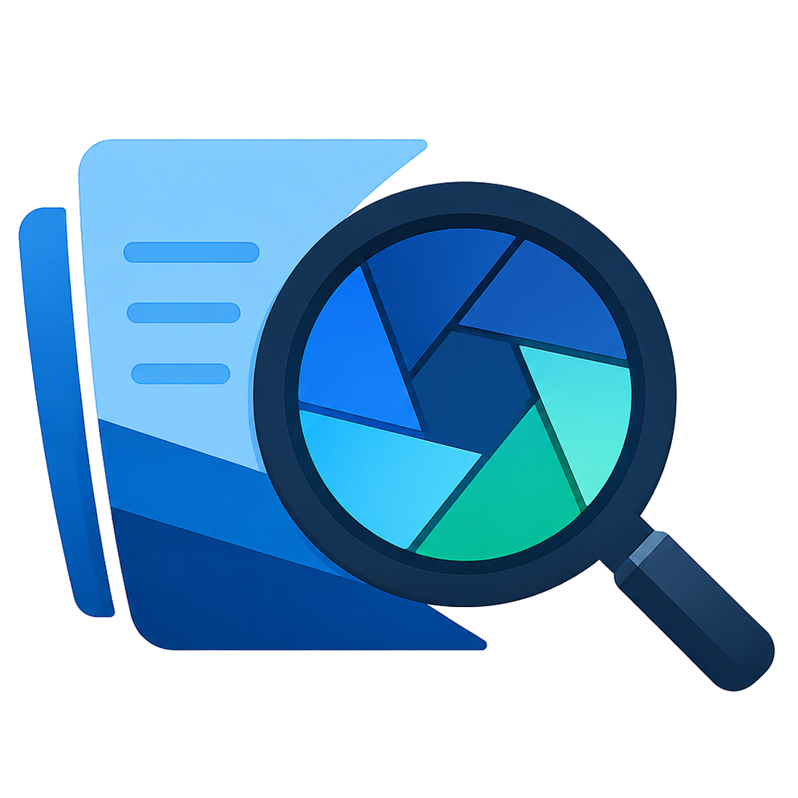

📋 Changes browser
Active and archived changes with tabs for proposal, tasks, design, and spec deltas - plus task-completion progress at a glance.

Free · Open source · Local-first
A desktop reader for OpenSpec projects.
Browse changes, trace how requirements evolved, and comment on specs - all from local folders.
macOS (Apple Silicon) · Linux (x64 / arm64) · Windows (x64 / arm64)
Active and archived changes with tabs for proposal, tasks, design, and spec deltas - plus task-completion progress at a glance.
Changes laid out chronologically, derived straight from your git history. No metadata files to maintain.
See how capabilities, changes, and specs relate to each other - and how work flowed from proposal to archive.
The current state of every capability, the schema that generated it, and EARS keyword highlighting in spec prose.
Select any passage to attach a comment. Unresolved/resolved workflow, quote-click jumps back to the highlighted text - stored locally in SQLite.
Copy your review comments as structured markdown - quotes, authors, and status included - and paste them straight into your preferred LLM or coding agent.
Who created and last edited every document, straight from git log. Works with any repo; degrades gracefully without one.
Global search (⌘K), back/forward history, document zoom, minimap with a slide-out table of contents, Mermaid diagrams.
Point it at folders on your machine. No accounts, no cloud, no telemetry - your specs never leave your disk.
Dark and light themes, resizable sidebar and comments panel, reading-speed and highlight-color settings, document zoom.
openspec/ directory.Grab the build for your system from the latest release.
The full list lives in docs/ROADMAP.md.